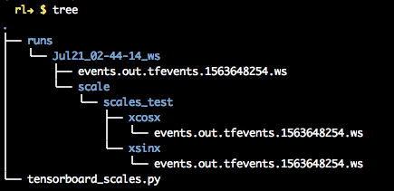
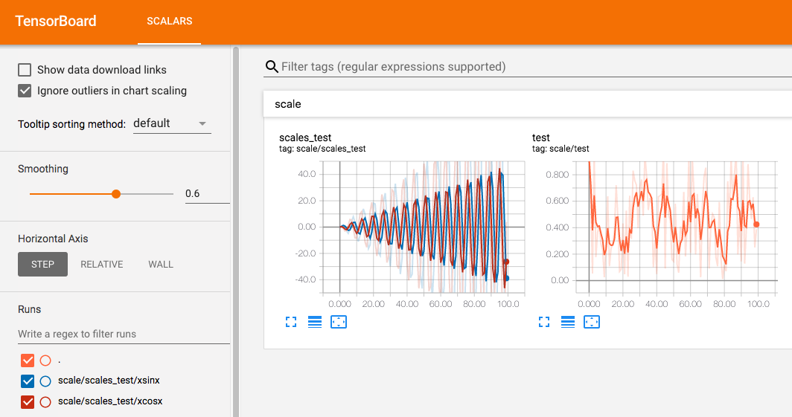
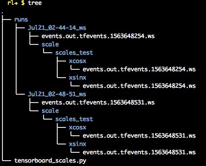
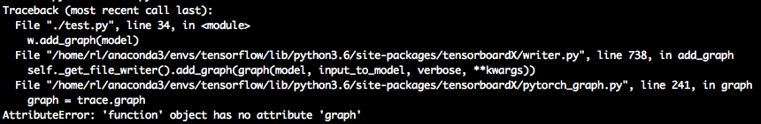

pytorch+tensorboardX
简单总结一下tensorboardX的用法。
import numpy as np
from tensorboardX import SummaryWriter
write = SummaryWriter()
for epoch in range(100):
write.add_scalar('scale/test', np.random.rand(), epoch)
write.add_scalars('scale/scales_test', {'xsinx':epoch*np.sin(epoch), 'xcosx' : epoch*np.cos(epoch)}, epoch)
write.close()
在终端中运行上边代码:python ./tensorboard_scales.py，查看代码目录下多了一个runs的目录，里边保存的就是代码运行时的数据。

再使用tensorboard --logdir runs,在浏览器地址栏输入ip_address:6006就能看到图像。

此时再次运行代码，再查看目录结构，会发现又多了一些目录，这是因为tensorboard会保存几个历史版本。这个功能很好用，可以通过点击左下角的复选框勾选要对比的曲线，进而对比模型的性能。

试试graph
import torch
import torch.nn as nn
import torch.nn.functional as F
from tensorboardX import SummaryWriter
class Net1(nn.Module):
def __init__(self):
super(Net1, self).__init__()
self.conv1 = nn.Conv2d(1, 10, kernel_size=5)
self.conv2 = nn.Conv2d(10, 20, kernel_size=5)
self.conv2_drop = nn.Dropout2d()
self.fc1 = nn.Linear(320, 50)
self.fc2 = nn.Linear(50, 10)
self.bn = nn.BatchNorm2d(20)
def forward(self, x):
x = F.max_pool2d(self.conv1(x), 2)
x = F.relu(x) + F.relu(-x)
x = F.relu(F.max_pool2d(self.conv2_drop(self.conv2(x)), 2))
x = self.bn(x)
x = x.view(-1, 320)
x = F.relu(self.fc1(x))
x = F.dropout(x, training=self.training)
x = self.fc2(x)
x = F.softmax(x, dim=1)
return x
dummy_input = torch.rand(13, 1, 28, 28)
model = Net1()
with SummaryWriter(comment='Net1') as w:
w.add_graph(model, (dummy_input,))
在运行的时候报错了。

上网搜索了一番说是pytorch版本的问题，为了跑写好的强化学习的代码，我用的是比较老的0.4.0版本的，回头有机会测一下pytorch 1.0+的看可不可以用。
总结一下TensorboardX的用法
- 声明一个
SummaryWriter()对象，log_dir参数能指定log文件保存的路径。 - 然后使用
add_xxx()函数向log中添加内容，xxx可以是scalar,image,figure,histogram,audio,text,graph,onnx_graph,embedding,pr_curve,mesh,hyper-parametersandvideo，详情参见或者tensorboardX。 - 关闭
SummaryWriter()对象 - 使用
tensorboard --logdir命令启动tensorboard - 在浏览器里查看输出。
TensorFlow+TensorBoard
总结一下使用的步骤
- 建立一个计算图（Graph）
确定要在Graph中的哪些节点放置summary operations（即要在tensorboard中观察哪些数据）
tf.summary.scalar- 记录标量tf.summary.histogram- 记录数据的直方图tf.summary.image- 记录图片tf.summary.audio- 记录音频tf.summary.graph- 记录计算图结构tf.summary.distribution- 记录数据分布tf.summary.embeddings- 记录嵌入向量tf.summary.text- 记录文本
- 使用
tf.summary.merge_all将所有summary operations合并为一个operation - 运行3中合并之后的operation:
summary = sess.run(all_summary) - 声明一个
FileWriter对象：writer = tf.summary.FileWriter("./train", graph)#如果有graph参数，可以在tensorboard中查看graph的结构。 - 使用
tf.summary.FileWriter将数据写入本地磁盘:writer.add_summary(summary, steps) - 运行程序后，使用
tensorboard --logdir=logdir启动tensorboard,然后在浏览器中查看。
参考代码
import tensorflow as tf
from tensorflow.examples.tutorials.mnist import input_data
max_steps = 1000 # 最大迭代次数
learning_rate = 0.001 # 学习率
dropout = 0.9 # dropout时随机保留神经元的比例
data_dir = './' # 样本数据存储的路径
log_dir = './' # 输出日志保存的路径
mnist = input_data.read_data_sets(data_dir, one_hot=True)
sess = tf.InteractiveSession()
with tf.name_scope('input'):
x = tf.placeholder(tf.float32, [None, 784], name='x-input')
y_ = tf.placeholder(tf.float32, [None, 10], name='y-input')
with tf.name_scope('input_reshape'):
image_shaped_input = tf.reshape(x, [-1, 28, 28, 1])
tf.summary.image('input', image_shaped_input, 10)
def weight_variable(shape):
"""Create a weight variable with appropriate initialization."""
initial = tf.truncated_normal(shape, stddev=0.1)
return tf.Variable(initial)
def bias_variable(shape):
"""Create a bias variable with appropriate initialization."""
initial = tf.constant(0.1, shape=shape)
return tf.Variable(initial)
def variable_summaries(var):
"""Attach a lot of summaries to a Tensor (for TensorBoard visualization)."""
with tf.name_scope('summaries'):
# 计算参数的均值，并使用tf.summary.scaler记录
mean = tf.reduce_mean(var)
tf.summary.scalar('mean', mean)
# 计算参数的标准差
with tf.name_scope('stddev'):
stddev = tf.sqrt(tf.reduce_mean(tf.square(var - mean)))
# 使用tf.summary.scaler记录记录下标准差，最大值，最小值
tf.summary.scalar('stddev', stddev)
tf.summary.scalar('max', tf.reduce_max(var))
tf.summary.scalar('min', tf.reduce_min(var))
# 用直方图记录参数的分布
tf.summary.histogram('histogram', var)
def nn_layer(input_tensor, input_dim, output_dim, layer_name, act=tf.nn.relu):
"""Reusable code for making a simple neural net layer.
It does a matrix multiply, bias add, and then uses relu to nonlinearize.
It also sets up name scoping so that the resultant graph is easy to read,
and adds a number of summary ops.
"""
# 设置命名空间
with tf.name_scope(layer_name):
# 调用之前的方法初始化权重w，并且调用参数信息的记录方法，记录w的信息
with tf.name_scope('weights'):
weights = weight_variable([input_dim, output_dim])
variable_summaries(weights)
# 调用之前的方法初始化权重b，并且调用参数信息的记录方法，记录b的信息
with tf.name_scope('biases'):
biases = bias_variable([output_dim])
variable_summaries(biases)
# 执行wx+b的线性计算，并且用直方图记录下来
with tf.name_scope('linear_compute'):
preactivate = tf.matmul(input_tensor, weights) + biases
tf.summary.histogram('linear', preactivate)
# 将线性输出经过激励函数，并将输出也用直方图记录下来
activations = act(preactivate, name='activation')
tf.summary.histogram('activations', activations)
# 返回激励层的最终输出
return activations
hidden1 = nn_layer(x, 784, 500, 'layer1')
with tf.name_scope('dropout'):
keep_prob = tf.placeholder(tf.float32)
tf.summary.scalar('dropout_keep_probability', keep_prob)
dropped = tf.nn.dropout(hidden1, keep_prob)
y = nn_layer(dropped, 500, 10, 'layer2', act=tf.identity)
with tf.name_scope('loss'):
# 计算交叉熵损失（每个样本都会有一个损失）
diff = tf.nn.softmax_cross_entropy_with_logits(labels=y_, logits=y)
with tf.name_scope('total'):
# 计算所有样本交叉熵损失的均值
cross_entropy = tf.reduce_mean(diff)
tf.summary.scalar('loss', cross_entropy)
with tf.name_scope('train'):
train_step = tf.train.AdamOptimizer(learning_rate).minimize(
cross_entropy)
with tf.name_scope('accuracy'):
with tf.name_scope('correct_prediction'):
# 分别将预测和真实的标签中取出最大值的索引，弱相同则返回1(true),不同则返回0(false)
correct_prediction = tf.equal(tf.argmax(y, 1), tf.argmax(y_, 1))
with tf.name_scope('accuracy'):
# 求均值即为准确率
accuracy = tf.reduce_mean(tf.cast(correct_prediction, tf.float32))
tf.summary.scalar('accuracy', accuracy)
# summaries合并
merged = tf.summary.merge_all()
# 写到指定的磁盘路径中
train_writer = tf.summary.FileWriter(log_dir + '/train', sess.graph)
test_writer = tf.summary.FileWriter(log_dir + '/test')
# 运行初始化所有变量
tf.global_variables_initializer().run()
def feed_dict(train):
"""Make a TensorFlow feed_dict: maps data onto Tensor placeholders."""
if train:
xs, ys = mnist.train.next_batch(100)
k = dropout
else:
xs, ys = mnist.test.images, mnist.test.labels
k = 1.0
return {x: xs, y_: ys, keep_prob: k}
for i in range(max_steps):
if i % 10 == 0: # 记录测试集的summary与accuracy
summary, acc = sess.run([merged, accuracy], feed_dict=feed_dict(False))
test_writer.add_summary(summary, i)
print('Accuracy at step %s: %s' % (i, acc))
else: # 记录训练集的summary
if i % 100 == 99: # Record execution stats
run_options = tf.RunOptions(trace_level=tf.RunOptions.FULL_TRACE)
run_metadata = tf.RunMetadata()
summary, _ = sess.run([merged, train_step],
feed_dict=feed_dict(True),
options=run_options,
run_metadata=run_metadata)
train_writer.add_run_metadata(run_metadata, 'step%03d' % i)
train_writer.add_summary(summary, i)
print('Adding run metadata for', i)
else: # Record a summary
summary, _ = sess.run([merged, train_step], feed_dict=feed_dict(True))
train_writer.add_summary(summary, i)
train_writer.close()
test_writer.close()